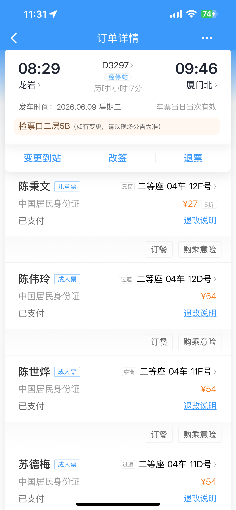
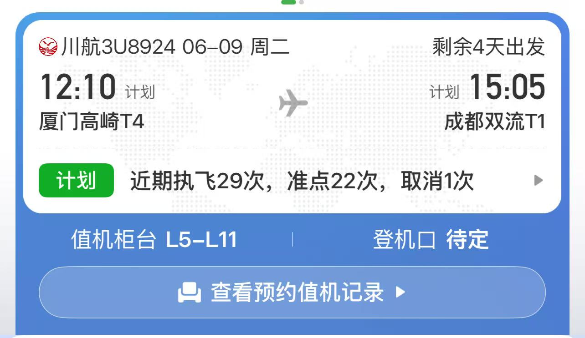
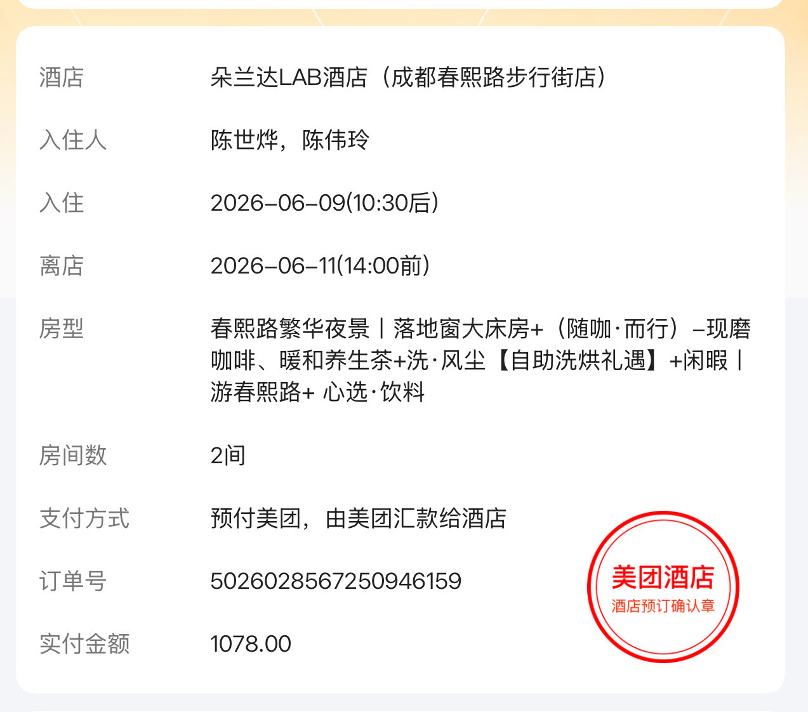
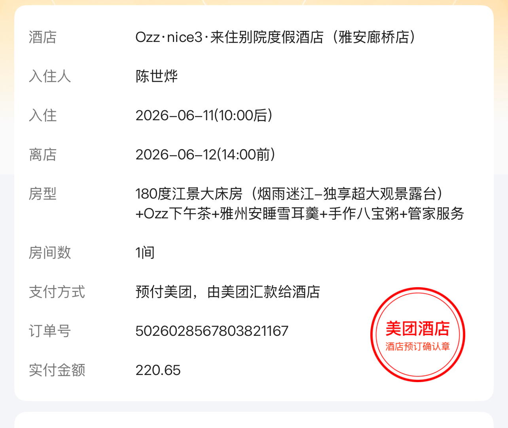

毕业典礼 + 成都重庆北京 十日游
龙岩 → 厦门 → 成都 → 雅安 → 重庆 → 北京 → 龙岩
6月9日-18日 · 端午前一天到家
4大1小出发 → 妹妹加入（5人）→ 大姑姑北京会合（7人）
十天概览
| 日期 | 星期 | 主题 | 睡在哪 |
|---|
| 6/9 | 周二 | 龙岩→厦门→成都，赶路日 | 成都 |
| 6/10 | 周三 | 成都玩一天：熊猫+老街+火锅 | 成都 |
| 6/11 | 周四 | 上午成都逛逛，午饭后去雅安 | 雅安 |
| 6/12 | 周五 | 🎓 毕业典礼！傍晚去重庆 | 重庆 |
| 6/13 | 周六 | 重庆玩一天：索道+轻轨+古镇+夜景 | 重庆 |
| 6/14 | 周日 | 一早飞北京，下午到 | 北京 |
| 6/15 | 周一 | 故宫中轴线 | 北京 |
| 6/16 | 周二 | 圆明园+北大 | 北京 |
| 6/17 | 周三 | 天坛+买特产+收拾 | 北京 |
| 6/18 | 周四 | 高铁回龙岩，晚上到家 | 🏠 |
Day 1 | 6月9日（周二）龙岩 → 成都
今天就是坐车坐飞机，没啥好说的，别慌就行。全程衔接都挺顺的，不用跑。
头天晚上就把行李装好。身份证×4、小孩户口本、充电器、充电宝（别超过20000毫安，飞机不让托运）。早上拎包就走。
🚄
龙岩站 → 厦门北站
D3297 动车 | 已购票 | 08:29→09:46
1小时17分

到厦门北站跟着人流出站就行。不用急，下一段打车去机场也就半小时的事。
🚕
厦门北站 → 高崎机场T4
打车/网约车 | 约30分钟 | 40块左右
09:50走
10:20到
10:20到机场，12:10的飞机，差不多两个小时用来值机托运安检，绰绰有余。过了安检在候机厅给小孩买点零食和水，飞机上吃。
✈️
厦门高崎 → 成都双流
3U8924 川航 | 已购票 | 12:10→15:05
约3小时

川航飞机餐还行，不用在机场吃午饭。飞机上能吃饱。如果小孩挑食就带点面包。
🚇
双流机场 → 春熙路
地铁10号线坐到太平园，换3号线到春熙路 | 约40分钟
15:30走
16:15到
双流机场离市区近，地铁直达，不用打车。打车反而可能堵在路上。
16:15
🏨 入住：朵兰达LAB酒店（成都春熙路步行街店）
📍 锦江区春熙路北段26号4楼 · 14:30后入住 ×2间，连住2晚

17:30
出门逛。酒店走路到太古里就几分钟，IFS那只爬墙熊猫去打个卡——成都地标，不拍等于没来
18:30
🍽️ 晚饭。春熙路附近随便找，想正式点就去龙抄手总店（钟水饺、担担面、赖汤圆，人均40-50），想随便吃就路边找家串串或者面馆，成都随便进一家都不会太难吃
20:00
散个步消消食，太古里夜景不错。方所书店可以逛一圈。别搞太晚，明天要早起看熊猫
第一天别想着玩什么，就是安顿下来。成都又不是只来一次，以后有的是机会。
Day 2 | 6月10日（周三）成都玩一天
今天主题明确：早上看熊猫，下午泡茶馆，晚上吃火锅。不用赶，顺着走就行。
关于熊猫基地
花花（那个全网最火的熊猫）早上7:30出来活动，8:30-9:00饲养员就收它回空调房了。所以要赶早，不然只能看它睡觉。南大门进去，直奔幼年大熊猫别墅52号——花花在那儿。看完花花再慢慢逛别的馆。门票55块，提前网上买好。
07:15
🚕 打车去熊猫基地，半小时左右，35块钱
07:45
🐼 进园。先看花花，然后太阳产房、月亮产房、成年熊猫区。早上熊猫活跃，过了9点基本都在睡。逛到11点差不多了
11:00
🚌 景区直通车回市区，坐到宽窄巷子，半小时，10块钱
12:00
🍽️ 午饭：宽窄巷子。不用找大饭店，路边小吃挨个尝——三大炮、糖油果子、蛋烘糕、肥肠粉，人均四五十搞定。边走边吃才是成都的节奏
13:00
🏘️ 逛宽窄巷子。宽巷子、窄巷子、井巷子三条，免费的。清朝老街区，川西民居风格。逛一个小时够了，不用每条巷子走到底
14:30
🍵 走路去人民公园（十分钟）。鹤鸣茶社，百年老茶馆，点杯盖碗茶（15-25块），坐下。嗑瓜子、聊天、看大爷大妈跳舞——这才是成都。别想着赶下一个景点，坐着就对了，坐到不想坐为止
16:00
🏛️ 武侯祠。就在人民公园旁边，走路十分钟。门票50。刘备墓、诸葛亮殿、还有那条红墙夹道——拍照很好看。傍晚光线柔和，比中午来舒服多了
17:30
🏮 武侯祠隔壁就是锦里。出来正好等天黑——锦里的精华就是灯笼亮起来之后。先逛一圈熟悉路，然后找个地方坐着等天黑
19:00
🍽️ 晚饭：锦里小吃，或者走远点到巴蜀大宅门吃火锅。火锅人均80-100，不想花太多就路边串串香，人均40，一样好吃
21:00
差不多回酒店。今天从早上6点多到现在，走了不少路。泡个脚早点睡
今天路线：熊猫基地→宽窄巷子→人民公园→武侯祠→锦里。五个点，但都在一条线上，走着走着就逛完了。锦里和武侯祠就是隔壁，安排在傍晚一起逛最合理。
Day 3 | 6月11日（周四）成都 → 雅安
上午在成都再逛逛，吃个午饭，下午坐火车去雅安。雅安是妹妹上学的地方，川西小城，节奏慢得很。
08:00
不用太早起。酒店吃个早餐，慢慢来。前两天累了可以多睡一会儿
09:00
🏛️ 杜甫草堂。门票50。诗圣住过的地方，茅草屋、竹林、红墙，六月份荷花刚开始开。逛一个半小时差不多，感受一下氛围就行，不用每个角落都走到
10:30
草堂隔壁浣花溪公园走走（免费），或者直接回酒店收拾东西
12:00
🍽️ 午饭。酒店附近找个川菜馆，回锅肉、麻婆豆腐、水煮鱼，人均五六十。不用特意跑远
🚇
春熙路 → 成都南站
地铁2号线转1号线 | 半小时
13:00走
13:30到
🚄
成都南 → 雅安
C3358 动车 | 14:21→15:28 | 52块/人
备选：C3366 14:58→16:17 / C3422 16:02→17:09
约1小时
成都南站不大，提前40分钟到绰绰有余。万一赶不上14:21那班，后面还有两班，不用慌。
🚕
雅安站 → 川农附近酒店
打车 | 15分钟 | 15块
15:30走
15:45到
16:00
🏨 入住：来住别院度假酒店（雅安廊桥店）
📍 雨城区青衣江路中段66号（近雅州廊桥）· 14:00后入住 ×2间，住1晚

17:00
📞 联系妹妹。确认明天毕业典礼几点、在哪、要不要提前去踩点。约个见面地方
17:30
🚶 出门走走。青衣江边散步，走到雅安廊桥。来回四十分钟，空气湿润舒服
18:30
🍽️ 晚饭。雅安特色——砂锅雅鱼、挞挞面、汉源花椒鸡。搜一下"兰师傅挞挞面"，当地有名的，人均60
20:00
🌉 廊桥夜景很漂亮，拍拍照。然后早点回去，明天是大日子
雅安外号"雨城"，一年下两百多天雨。带把伞。但雨通常不大，毛毛雨那种，空气特别清新。
Day 4 | 6月12日（周五）🎓 毕业典礼 → 傍晚到重庆
今天两件大事：上午妹妹毕业典礼，下午一家人转场重庆。节奏会比较紧凑，但安排好就没问题。
07:00
⏰ 起。酒店早餐。起不来也得起——毕业典礼不能迟到
08:00
去川农大。路上看到花店停一下，买束花——向日葵配百合，毕业照拿着好看。不用太大束，拿着累
09:00
🎓 毕业典礼！体育馆还是大礼堂看学校安排。给妹妹拍照、录像，这是她大学四年最重要的时刻。家里人能到现场的其实不多，你们来了，妹妹心里肯定高兴
11:00
典礼结束。妹妹穿着学士服，开始校园拍照环节 📸。路线：图书馆前面草坪→梧桐大道→青衣江边→老校门。上午光线最柔，拍人像好看。悠着拍，不赶，拍到满意为止
12:00
🍽️ 午饭：川农食堂！让妹妹刷饭卡，人均15块。不是什么山珍海味，但这是妹妹吃了四年的味道。吃完帮妹妹去宿舍收拾行李——她跟我们一起走接下来的行程
行李提醒
妹妹宿舍收拾出来的东西可能会比较多。提前问好她大概有多少——如果大件多，看能不能提前寄回家。只带接下来几天需要的衣物和用品跟我们走。
🚄
雅安 → 成都南
C3350 动车 | 13:53→15:05 | 52块/人
备选：C3414 14:49→16:09
约1小时
🚇
成都南 → 成都东
地铁7号线 | 15分钟 | 不用出站
15:10走
15:25到
成都东站比较大，换乘留半小时。站内买点吃的喝的带上高铁。现在开始就是5个人一起走了。
🚄
成都东 → 重庆西
G8629 高铁 | 15:50→17:20 | 约150块/人
备选：G1831 16:10→17:40 / G2885 17:05→18:35
1.5小时
🚕
重庆西站 → 解放碑酒店
打车 | 半小时 | 40块
17:30走
18:00到
18:00
🏨 到酒店。解放碑或洪崖洞附近，连住两晚。进门放行李，坐五分钟喘口气
18:30
换身衣服出门。走路去洪崖洞，十来分钟。先在千厮门大桥上拍洪崖洞全景——这个机位最经典。然后等天黑亮灯（大概19:30）
19:30
🌃 洪崖洞亮灯！拍完照想进去逛就进去，免费。但人很多，抱着小孩或者牵着，注意台阶
20:30
🔥 重庆火锅！珮姐老火锅、周师兄大刀腰片，随便哪家。记住：鸳鸯锅，小孩吃清汤那边。人均100-120。第一顿重庆火锅，仪式感要有
山城走路注意
重庆不是上坡就是下坡，推婴儿车基本白瞎——全是台阶。小孩自己走或者抱着。全员穿运动鞋，不要穿什么凉鞋高跟鞋，会后悔的。
今天确实是整个行程里最忙的一天。但上午的毕业典礼是绝对不能省的，晚上到重庆也不算太晚。中间在火车上可以休息，到了重庆吃顿火锅就满血复活了。
Day 5 | 6月13日（周六）重庆玩一天
今天的路线：长江索道飞过江→轻轨穿楼→磁器口古镇→南山看夜景。四个体验，节奏刚好。
08:00
早饭：花市豌杂面。解放碑附近，走路就到，人均15。豌豆软烂、杂酱香，一碗下去整个人都醒了
08:30
🚠 走路到长江索道新华路站，十分钟。早上去人少，不用排长队。单程20块，4分钟飞到江对岸。脚下长江水，两边高楼刷刷过——这体验只有重庆有
09:30
🚝 南滨路坐轻轨2号线去李子坝，二十分钟。就是那个网红"轻轨穿楼"的地方。观景台拍张照，半小时够用。别逗留太久，就是个打卡点
11:00
🏘️ 磁器口古镇。千年历史，石板路、红灯笼、老房子。陈麻花是招牌——15块一袋，买几袋带回去当伴手礼。酸辣粉、糍粑、手工糖，边走边吃。逛一个半到两小时
12:30
🍽️ 午饭：磁器口古镇鸡杂或者毛血旺，人均50
14:00
吃完回酒店。六月份重庆中午35度往上，别在外面晒着。回去睡个午觉，下午四点再出来
中午到下午四点这段时间，重庆就是个大蒸笼。回酒店吹空调、睡觉，别觉得浪费时间——休息好了晚上才有精神看夜景。
16:00
如果精力还行，去鹅岭二厂文创园晃一圈（免费，《从你的全世界路过》在那取的景）。不想动就继续休息，无所谓
17:00
⛰️ 打车去南山一棵树观景台，门票30。重庆看全景最好的地方。五点到刚好——先看白天的山城全貌，再等天黑看夜景。两种感觉都看到
19:30
🍽️ 山上吃南山泉水鸡，人均80。不用下山找吃的。或者看完夜景回解放碑，较场口夜市吃小吃
21:00
回酒店。今晚早点睡！明天4:30要起。行李今晚就打包好，别明早手忙脚乱
明天赶早班机
4:30起床，5:00出发。提前把行李收拾好，手机设三个闹钟。告诉酒店前台明天一早退房，让他们提前准备好账单。
Day 6 | 6月14日（周日）重庆 ✈️ 北京
今天起得早，但上午就到北京了。下午安顿好，晚上就能逛起来。
04:30
⏰ 起。退房。昨晚打包好的行李直接拎走。前台如果有打包早餐的服务就带上，没有就机场买
🚕
解放碑 → 江北机场T2
打车 | 半小时 | 50块
一大早不堵车，半小时稳稳到
05:00走
05:30到
5:30到机场，7:10的飞机，一个半小时值机托运安检。早上人少，不用排队，时间够。
✈️
重庆江北 → 北京首都
3U8829 川航 | 已购票 | 07:10→09:40
2.5小时
🚇
首都机场 → 王府井
机场快轨到东直门，换2号线到建国门，再换1号线到王府井 | 约55分钟 | 25块
10:00走
10:50到
11:00
🏨 王府井附近入住，连住四晚。放行李，洗脸清醒一下
11:30
📞 联系大姑姑！大家在王府井会合。现在队伍变成7个人了——姑姑也加入北京段
12:00
🍽️ 午饭：四季民福烤鸭（前门店）。来北京第一顿必须是烤鸭。不用去全聚德排长队，四季民福性价比高，人均100。记得提前在大众点评取号
13:30
🏛️ 天安门广场。路过人民英雄纪念碑、国家博物馆门口。六月份北京中午也热（35度），广场上光秃秃的没遮阳，逛半小时差不多了。拍张合影就走
14:30
回酒店。今早四点多起的，下午补觉。尤其带小孩和老人的，不休息撑不住
17:00
🚶 睡醒了出来逛前门大街+大栅栏。瑞蚨祥、内联升、张一元这些百年老店看看。前门步行街不长，一个小时能走个来回
18:30
🍽️ 晚饭。中午烤鸭吃顶了，晚上就随便点——炸酱面、卤煮、炒肝，人均三四十。或者去四季民福再吃一顿也行（如果中午没吃上）
20:00
🌃 长安街散步。天安门城楼亮着灯，长安街华灯初上，走一走消化消化。今天早班机，别熬太晚
今天下午的安排很松散——就天安门广场和前门大街，都在酒店附近步行范围。刚到北京，先适应节奏，不急着到处跑。
Day 7 | 6月15日（周一）故宫 + 景山 + 什刹海
北京最核心的一天。走中轴线，但不用每个殿都看，看完三大殿和御花园就差不多了。
故宫门票——必须提前抢
微信搜"故宫博物院"小程序，提前7天晚上8点放票，基本秒没。成人60，学生30。定个闹钟抢，抢不到就只能去景山看全景了（门票2块，也能看）。
07:30
早饭：护国寺小吃。豆汁焦圈、驴打滚、豌豆黄。豆汁那个味儿不是每个人能接受，重在体验——喝一口皱眉头也是种回忆
08:30
🏛️ 天安门广场。早上凉快，人少，光线适合拍照
09:00
🏯 故宫。午门进→太和殿→中和殿→保和殿→乾清宫→交泰殿→坤宁宫→御花园→神武门出。中轴线走完大概三个小时。走累了就在御花园坐着歇，不用硬撑。偏殿太多看不过来，挑几个感兴趣的就够
12:30
🍽️ 午饭：神武门出来，景山附近找个老北京炸酱面。人均30-40。不用找大餐厅，故宫周围的小面馆最正宗
13:30
⛰️ 景山公园。门票2块钱——可能是北京性价比最高的景点。万春亭是中轴线制高点，爬上去十分钟不累。往南看，故宫红墙黄瓦铺满整个视野，刚才在里面走了三个小时的地方现在尽收眼底
14:30
回酒店。走了故宫三小时腿已经酸了。午休到傍晚
16:30
🚶 南锣鼓巷（地铁6号线）。老胡同改的商业街，氛围还行。逛四十分钟然后走到什刹海
17:30
🌅 什刹海。傍晚的湖面映着夕阳，看大爷钓鱼、大妈跳广场舞。沿湖走一圈很舒服
18:30
🍽️ 晚饭二选一：什刹海烤肉季（百年老店，人均120），或者簋街胡大饭馆麻辣小龙虾（人均120）。看你想吃哪种
故宫+景山+什刹海，三个点地理上是顺的——故宫出来就是景山，景山下来往东走就是什刹海。不用绕路。
Day 8 | 6月16日（周二）圆明园 + 北京大学
今天往海淀那边走。圆明园和北大就隔一条街，安排在一起最顺。
🚇
王府井 → 圆明园
地铁1号线到西单换4号线，圆明园站B口出 | 约50分钟
08:00走
08:40到
08:00
早饭：酒店附近买烧饼夹肉、豆腐脑，带着路上吃
08:45
🌿 圆明园（门票25）。南门进→西洋楼遗址→大水法→福海→长春园。西洋楼遗址区是精华——那些断壁残垣，站在那里能感受到历史的重量。逛两个半小时，不用走完全园，太大了
11:30
🏫 北京大学。需要提前在"参观北大"小程序预约！不一定能约上。如果能进去——未名湖、博雅塔、图书馆。博雅塔倒映在未名湖里，那个画面叫"一塔湖图"，是北大最经典的景。校园里走走，感受一下中国最高学府的氛围
13:00
🍽️ 午饭：北大食堂（如果能进去的话）或五道口附近吃，人均40-50。五道口是大学城，吃的东西又多又便宜
14:30
🚇 坐地铁回酒店。海淀回王府井差不多五十分钟，在地铁上就能休息
15:30
酒店休息。圆明园走了两个多小时，下午就别安排了。想出去逛就附近随便走走，不想动就躺平
18:30
🍽️ 晚饭：簋街（如果昨天没去）。胡大饭馆麻辣小龙虾，人均120。或者酒店附近找家涮肉
如果北大预约不上（这个很常见），那就圆明园逛完直接回，下午去王府井或者国子监街逛逛，不用纠结。
Day 9 | 6月17日（周三）天坛 + 买特产 + 收拾
最后一天了。上午逛一个经典，下午买东西收拾行李，不用赶。
08:00
早饭：天坛附近早点摊。烧饼夹肉、豆腐脑、糖油饼——老北京的一天才算开始
08:30
🏛️ 天坛公园（联票34：祈年殿+回音壁+圜丘坛）。祈年殿是北京的地标——三重蓝瓦圆顶，全木结构一颗钉子没用。慢慢逛两个小时。天坛公园里有意思的不只是建筑，看老北京遛鸟的、下棋的、踢毽子的，比祈年殿还生动
11:00
如果还有兴致，地铁5号线去雍和宫（门票25，藏传佛教寺庙）。不想去就在天坛附近坐着晒太阳
12:30
🍽️ 午饭：老北京涮肉。铜锅炭火，清汤涮羊肉蘸麻酱，人均80-100。或者简单吃碗炸酱面
14:00
🛍️ 王府井/前门买特产。稻香村糕点（牛舌饼、枣花酥、山楂锅盔必买）、六必居酱菜、张一元茶叶、北京酥糖。稻香村可以快递寄回家，别自己拎着坐高铁
17:00
回酒店。买的特产打包进行李箱。检查证件、车票是不是都在随身包里
18:00
🥘 晚饭：东来顺涮羊肉（王府井店，人均120）。最后一顿了，吃顿好的。或者还想吃烤鸭就再去四季民福
21:00
📦 最后检查：证件、车票、手机充电器、充电宝。明天不用太早起，但也不要太晚
Day 10 | 6月18日（周四）北京 → 龙岩 🏠
回家。十天旅程今天收官。明天就是端午，时间卡得刚刚好。
08:00
自然醒。酒店早餐，退房。再检查一遍有没有东西落在房间
🚇
王府井 → 北京南站
地铁1号线到西单换4号线 | 约30分钟
09:00走
09:20到
🚄
北京南 → 龙岩
G323 高铁 | 11:00→20:30（约9.5小时）
觉得高铁太久的话也可以✈️北京飞厦门（3小时）+ 🚄厦门动车回龙岩（1.5小时），快但贵
11:00出发
20:30到家
6/19
🎋 端午节！包粽子、挂艾草、一家人吃团圆饭。时间刚刚好
随身行李清单
十天九晚，六个城市，三个气候区。以下按类别列好，对着收拾就不会漏。
🛂
证件文件
身份证×4
小孩户口本
机票+车票截图（手机里存一份）
酒店预订截图
妹妹的学生证
银行卡+少量现金
🎫
预订备忘
✅动车D3297（6/9 龙岩→厦门）
✅川航3U8924（6/9 厦门→成都）
✅川航3U8829（6/14 重庆→北京）
⏳故宫提前7天晚8点抢票
⏳北大参观预约
⏳成都/雅安/重庆/北京酒店确认
🪥
洗漱用品
牙刷+牙膏×5
牙杯/一次性杯
洗面奶、卸妆水
洗发水、护发素
沐浴露、香皂
毛巾×5、浴巾×2
梳子、发圈、发夹
剃须刀（男士）
💄
化妆护肤
水乳精华面霜
防晒霜SPF50+（六月份暴晒）
隔离霜、粉底液
眉笔、眼线、睫毛膏
口红/唇釉×3
散粉/定妆喷雾
化妆棉、棉签
卸妆棉、卸妆油
面膜×10片（一天一片）
护手霜、润唇膏
小镜子、化妆刷
🛏️
床上用品
床单×2（双人床尺寸）
被套×2
枕套×4
小孩薄毯/小被子
便携隔脏睡袋
眼罩+耳塞
🍼
婴童用品
奶瓶×2 + 备用奶嘴
奶粉分装盒（按天数分好）
奶瓶刷+清洗液小瓶
保温杯（冲奶粉用）
儿童牙刷+牙膏
纸尿裤×30片
隔尿垫×3
湿巾×3包、棉柔巾×2包
口水巾×5、围兜×3
替换衣物×4套（小孩容易弄脏）
小零食（溶豆、饼干、果泥）
安抚玩具×2
轻便伞车（重庆爬坡慎用）
👕
衣物鞋帽
T恤×5、短裤×3
连衣裙/长裙×2
薄外套（飞机上和空调房）
睡衣×2套
内衣裤×5套
袜子×5双
运动鞋（重庆全是坡！）
凉鞋/拖鞋
遮阳帽、墨镜
一次性雨衣/折叠伞
📱
电子设备
手机+充电器×5
充电宝≤20000mAh×2
充电线多备2根（最容易丢）
相机+备用电池+SD卡
耳机、自拍杆
多口插排（酒店插座少）
iPad（小孩坐车看动画救命用）
💊
药品防护
退烧药（布洛芬混悬液小孩用）
感冒药、止咳药
蒙脱石散（拉肚子用）
创可贴、碘伏棉签
防蚊液、蚊虫叮咬膏
晕车药/晕机药
过敏药（氯雷他定）
藿香正气水（防中暑）
体温计
酒精湿巾、免洗洗手液
🧻
日常杂物
抽纸×5包、随身小包纸
湿厕纸、厨房湿巾
垃圾袋×10个
一次性马桶垫
折叠衣架×5
洗衣液旅行装
指甲刀、小剪刀
针线包
折叠水壶（酒店烧水用）
保温杯/水杯人手一个
泡面、饼干、零食（火车上吃）
折叠购物袋×2
雨伞×2
祝妹妹毕业快乐 🎓
一家人旅途愉快 · 端午团圆 🎋